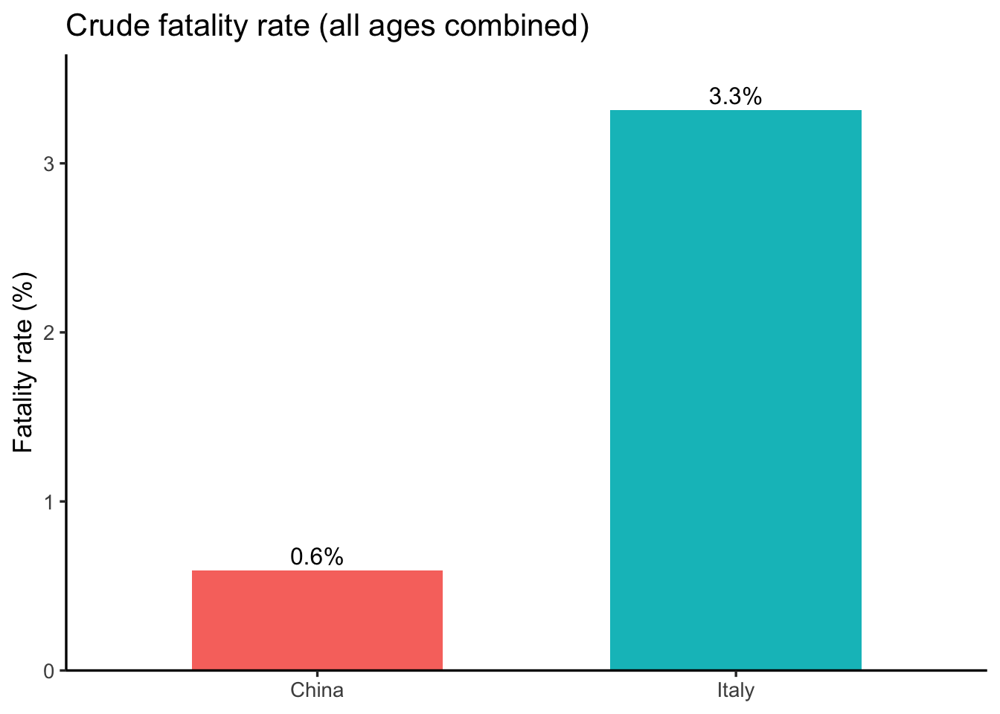

#> # A tibble: 2 × 4
#> Country Total_cases Total_deaths CFR_crude_pct
#> <chr> <dbl> <dbl> <dbl>
#> 1 China 43000 254 0.591
#> 2 Italy 11000 364. 3.31

To call in statisticians after the experiment is done may be no more than asking them to perform a post-mortem examination: They may be able to say what the experiment died of.*
– Sir Ronald Fisher
Many students come into statistics classes with a mix of nerves and low expectations. It is not always the most eagerly anticipated part of an environmental science degree. But statistics is one of the most important tools we have for understanding complex systems. Environmental data are messy: ecosystems shift, climate varies, and our judgments are often biased. Without statistical methods we risk telling convenient stories. With them, we can detect real patterns, test competing explanations, and make stronger arguments for environmental decisions.
Common sense is useful, but it is prone to bias. When we already believe something to be true, we are more likely to interpret new evidence as supporting it, even if it does not. This tendency can lead us astray in environmental science.
For example, if you are convinced that industrial farming is the main driver of bee declines, you might see every new drop in bee abundance as confirmation of that belief. Maybe you are right, but maybe disease or weather are stronger contributors. Statistics gives us tools to test these ideas systematically. It helps us separate patterns from noise, avoid being misled by our own expectations, and draw conclusions that are more likely to hold up under scrutiny. It’s not magic, but it makes our conclusions far more reliable.
Another challenge is that data can tell very different stories depending on how they are aggregated. Simpson’s paradox occurs when a trend seen in combined data reverses after you split the data into meaningful groups.
Here’s a recent example. During the COVID-19 pandemic, early data showed that Italy’s overall case fatality rate was higher than China’s. But, once researchers disaggregated by age group, the trend flipped: within every age group, the fatality rate was actually higher in China. The apparent contradiction was explained by differences in the age distribution of cases (von Kügelgen, Gresele, and Schölkopf 2021).
Using case fatality rate (CFR), here are some illustrative numbers (made up for teaching).
#> # A tibble: 2 × 4
#> Country Total_cases Total_deaths CFR_crude_pct
#> <chr> <dbl> <dbl> <dbl>
#> 1 China 43000 254 0.591
#> 2 Italy 11000 364. 3.31At face value, Italy looks worse. But what happens when we stratify by age group? Because age strongly affects COVID fatality, splitting cases into 10-year bands reveals a different picture. When we do, China’s fatality rate is higher in every band.
Why the reversal? Italy’s cases skew older while China’s skew younger, and baseline risk rises steeply with age. The differing age distributions weight the overall averages in opposite ways. Aggregating without age adjustment hid the within-group pattern.
Environmental science produces a lot of data. Every day satellites measure surface temperature, field stations log rainfall, and sensors track air quality. A single study can generate thousands of rows of numbers. Without statistical tools, these numbers would be overwhelming. With them, we can summarize, compare, and test ideas systematically.
Statistics matters here because environmental systems are messy. River flow changes by the hour, forests grow unevenly, and human actions layer on additional variability. Patterns are rarely obvious by eye. Statistics helps us sort signal from noise and ask: is this apparent change real, or just random variation?
You might think, “can’t a statistician just handle the math?” But knowing the basics yourself is essential for three reasons:
Design and analysis go together. A good study starts long before you run a statistical test. If you want to study how fertilizer affects crop yields, your sampling plan and your analysis are inseparable. Poor design, like measuring only in unusually wet fields, can’t be rescued by sophisticated analysis.
Understanding the Science: Scientific papers on climate change, biodiversity, or pollution are built on statistical results. To interpret them, you need to know what the numbers mean.
Practicality: Hiring a specialist for every question isn’t realistic. A working knowledge of statistics makes you more self-sufficient as a scientist.
“We are drowning in information, but we are starved for knowledge”
– Various authors, original probably John Naisbitt
Finally, statistics is not only for researchers. Weather forecasts, air quality alerts, and wildlife population trends are all communicated through numbers. A basic knowledge of statistics helps you tell whether those numbers support the claims being made, or whether someone is stretching the truth. In that sense, statistics is part of being an informed citizen in a data-saturated world.
Every dataset begins with measurement. Measurement means assigning numbers, labels, or categories to aspects of the world so they can be recorded and analyzed.
Why measurement matters
Environmental science often deals with broad ideas that need to be defined before they can be studied. For example, soil health or forest change are meaningful, but vague. To analyze them, we have to decide exactly what we mean and how to capture it. That process is called operationalization: turning a general concept into something measurable.
Before moving on, let’s clarify how operationalization fits with three related terms:
Examples:
Operationalization is rarely straightforward, and there is no single correct way to do it. The best choice depends on the question you are asking and how the data will be used. In many fields, scientists have developed common practices, but every project still requires case-by-case judgment. Even so, some principles of good operationalization apply across studies: be precise about what you mean, how you will measure it, and what values are possible.
As the previous section indicates, the outcome of a measurement is called a variable. Not all variables are the same type, and knowing the type matters because it determines which statistical tools make sense. The four classic scales are nominal, ordinal, interval, and ratio.
A nominal scale variable (also referred to as a categorical variable) is one in which the values are just names. They do not have an inherent order, and it makes no sense to average them.
Example: eye color. Eyes can be blue, green, or brown, but none is “greater” than another, and there’s no such thing as an “average eye color.”
Ordinal scale variables have a meaningful order, but the spacing between values is not defined mathematically. You can rank the values, but you can’t assume equal steps between them, nor calculate a meaningful average.
Example: finishing position in a race. First place comes before second, and second before third, but you don’t know how much faster one runner was than another. Saying the “average place” of the group is 2.3 doesn’t mean anything.
Interval variables have equal intervals between values, so differences are meaningful. However, zero is arbitrary, so multiplication and division are not valid.
Example: temperature in degrees Celsius. A difference of 3\(^\circ\) means the same regardless of whether it is 7 → 10 or 15 → 18. But 0\(^\circ\) does not mean “no temperature.” That zero is defined by the freezing point of water. So while you can say today is 3\(^\circ\) warmer than yesterday, you cannot say 20\(^\circ\) is “twice as hot” as 10\(^\circ\).
(Alternate example: latitude. A difference of 10° latitude is meaningful, but zero latitude—the equator—doesn’t mean “no latitude.” Twice 45° is 90°, but that doesn’t mean one place has “twice as much latitude” as another.)In contrast to nominal and ordinal scale variables, interval scale and ratio scale variables are variables for which the numerical value is genuinely meaningful. In the case of interval scale variables, the differences between the numbers are interpretable, but the variable doesn’t have a “natural” zero value. You can add and subtract, but ratios don’t make sense.
Ratio scale variables have all the properties of interval variables, plus a true zero. This makes multiplication and division valid, as well as addition and subtraction.
Example: age in years. Zero means no age at all, and someone who is 20 years old really is twice as old as someone who is 10. Differences (20 – 10 = 10 years) and ratios (20 ÷ 10 = 2) are both meaningful.
| can rank | can subtract/add | can multiply/divide | example | |
|---|---|---|---|---|
| nominal | eye color | |||
| ordinal | x | race position | ||
| interval | x | x | temperature (°C) | |
| ratio | x | x | x | age |
Another useful distinction is whether a variable can take on values in between others.
A continuous variable can, in principle, take on any value within a range. For example, consider height. If you are 72 inches tall and your friend Cameron is 71 inches tall, Alan could be 71.4 inches and David 71.49 inches. Because we can always imagine a new value in between two others, height is continuous.
A discrete variable is, in effect, a variable that isn’t continuous. Discrete variables have separate, distinct values with nothing in between. Nominal variables are always discrete: there is no eye color that falls “between” green and blue in the same way that 71.4 falls between 71 and 72. Ordinal variables are also discrete: although second place falls between first and third, nothing can logically fall between first and second.
Interval and ratio variables can be either. Height (a ratio variable) is continuous. But the number of people living in a household (a ratio variable) is discrete: you cannot have 4.2 people. Temperature in degrees Celsius (an interval variable) is also continuous. But the year you started college (an interval variable) is discrete: there is no year between 2022 and 2023.
The table below shows how the scales of measurement relate to this distinction. Cells with an “x” mark what is possible.
| continuous | discrete | |
|---|---|---|
| nominal | x | |
| ordinal | x | |
| interval | x | x |
| ratio | x | x |
These categories are guides, not hard rules. For example, survey responses on a 1–5 “strongly disagree” to “strongly agree” scale are technically ordinal, but researchers often treat them as “quasi-interval” because the spacing is assumed to be roughly equal.
When we measure something, two questions matter: is the measurement consistent, and is it accurate?
Reliability means consistency. If you measure the same thing again, do you get the same result?
Validity means accuracy. Does the measurement reflect the real thing you care about?
These aren’t the same. A soil moisture probe that is miscalibrated might always read 5% too high. It is highly reliable, you get the same number each time, but not valid, since it doesn’t reflect true soil moisture. On the other hand, a set of volunteer bird counts might fluctuate from one observer to the next (low reliability), but when averaged across many counts, the results may still approximate true abundance (reasonable validity).
In practice, a measure that is very unreliable usually ends up being invalid too, because we can’t tell which result is right. This is why reliability is often considered a prerequisite for validity.
Reliability can show up in different ways:
Over time (test–retest): if you sample soil moisture today and tomorrow under the same conditions, do you get the same value?
Across people (inter-rater): if two field crews count birds at the same site, do their tallies agree?
Across tools (parallel forms): if you use two different rain gauges in the same spot, do they record the same rainfall?
Within a test (internal consistency): if multiple survey questions are meant to capture the same attitude, do they give similar answers?
Not every measurement needs (or can even possibly have) every form of reliability. The point is that reliability is necessary but not sufficient for validity: a method can be consistently wrong, but if it isn’t consistent at all, it’s almost impossible to know whether it’s right. We’ll discuss how we assess validity a bit later in this chapter.
One last piece of terminology before we leave variables behind. In most studies we have many variables, but when we analyze them, we usually split them into two roles: the thing we’re trying to explain and the thing doing the explaining. To keep it straight, we use \(Y\) for the variable being explained, and a \(X_1\), \(X_2\), etc. for the variables used to explain it.
Traditionally, \(X\) is called the indepdendent variable (IV) and \(Y\) is the dependent variable (DV). The logic is that if there’s a relationship, \(Y\) depends on \(X\). These terms can be clunky and can be confusing because: (a) IVs are rarely actually “independent of everything else” and (b) if there’s no relationship, then the DV doesn’t actually “depend” on the IV at all.
Alternative terminology is often clearer. In experiments, IVs are manipulations, and DVs are measurements:
| role of the variable | classical name | alternative |
|---|---|---|
| “to be explained” (\(Y\)) | dependent variable (DV) | measurement |
| “to do the explaining” (\(X\)) | independent variable (IV) | manipulation |
Another useful pair is predictors and outcomes. The idea here is that what we use \(X\) to make predict or guess about \(Y\):
| role of the variable | classical name | alternative |
|---|---|---|
| “to be explained” (\(Y\)) | dependent variable (DV) | outcome |
| “to do the explaining” (\(X\)) | independent variable (IV) | predictor |
A central distinction in research is between experimental and non-experimental studies. What matters here is the degree of control the researcher has.
In experimental research, the researcher deliberately manipulates something (the predictor/IV) and measures its effect on outcomes (the outcome/DV). The goal is to isolate causal effects. To avoid the problem of “something else” influencing the outcome, researchers try to hold other factors constant. In practice, it’s almost impossible to identify everything that might matter, much less keep it constant. The standard solution is randomization. Randomization doesn’t eliminate confounds, but it makes them less likely to systematically bias results.
For instance, suppose we wanted to know if smoking causes lung cancer. Observing smokers and non-smokers can only get us so far, because those groups differ in many ways besides smoking, like occupation, income, and diet. A true experiment would require randomly assigning people to smoke or not. You can see how that would be deeply unethical. The same problem comes up in medicine: we know surprisingly little about how certain drugs or exposures affect pregnant people, precisely because we cannot ethically assign them to risky conditions.
In environmental science, the limitation isn’t usually ethics but feasibility: there’s no “control planet” we can set aside as a baseline. Nor can researchers manipulate fundamental drivers like precipitation or temperature. As a result, much of the field relies on non-experimental research — quasi-experiments, long-term time series, or detailed case studies that allow scientists to tease out effects in complex systems.
Much environmental science fits a quasi-experimental design. For example, researchers may wish to study the effects of industrial pollution on a river system but cannot directly control the pollutants emitted. Instead, they observe existing conditions and make careful comparisons, often using statistical tools to account for confounding variables.
Another important quasi-experimental tool is time series analysis, since many environmental processes unfold over decades or centuries. Tracking changes in global temperature or sea level requires years of consistent data, and statistical methods help isolate signals from the noise of natural variability.
Environmental science also makes extensive use of case studies, which provide in-depth insights into specific events or locations. A case study might explore the aftermath of a natural disaster, the ecology of a threatened habitat, or the consequences of an environmental policy. While a single case is tied to a particular context, well-designed studies can uncover mechanisms that apply more broadly. For example, a drought in one forest might reveal how water potential and transpiration respond to stress, helping researchers anticipate plant responses in other ecosystems.
Earlier we drew a line between reliability (consistency) and validity (accuracy). Reliability tells us whether our measurement is stable and repeatable. Validity asks the harder question: are we actually measuring what we think we’re measuring, and can we trust the conclusions we draw from it?
Internal validity is about whether the relationship you see is really causal. From an earlier example: if smokers have more lung cancer than non-smokers, does that mean smoking causes cancer? Not necessarily. Smokers may differ from non-smokers in income, occupation, diet, or other ways. These “confounds” muddy causal claims. Experiments with random assignment improve internal validity by balancing out such factors, but in environmental science, we often rely on careful design and statistical controls instead.
External validity is about generalization. Does what you found in one study hold elsewhere? A soil-warming experiment in one forest plot may not capture how all forests respond. Or water-quality measurements from a single river reach may not represent conditions across the whole watershed. Strong internal validity can still leave you with weak external validity if the setting, population, or conditions are narrow.
Construct validity is about whether your measure really matches the concept. If you care about soil fertility but measure only soil moisture, you have high reliability but weak construct validity: you’re consistently measuring the wrong thing. Getting this right requires aligning theory, measurement, and data.
Broadly, the two biggest threats to validity are confounds and artifacts:
Confound: An additional variable, often unmeasured, that masks or distorts the relationshp between the predictor and the outcome. Confounds threaten internal validity because you can’t tell whether the predictor really causes the outcome. Two variables are said to be confounded if their effects on a response variable cannot be distinguished.
Artifact: An aspect of the experimental setup or apparatus that biases the results. An artifact gives the appearance of measuring the phenomenon of interest, but is actually measuring something else introduced by the method itself. Artifacts often undermine external validity, and sometimes internal validity too.
Here are some more types of threats to validity:
History Effects: Events outside the study can shift the outcome. Long-term ecosystem monitoring is especially vulnerable: imagine tracking stream chemistry for years, then a wildfire in the watershed alters nutrient fluxes. Your “trend” may just reflect that disturbance rather than the process you meant to study.
Repeated Testing Effects: Even measurements themselves can have an effect. For example, extracting multiple tree-ring cores from the same tree could wound it and reduce growth in later years, influencing the very variable you were trying to measure.
Selection bias: Environmental research often focuses on sites that are easiest to study, like forests near R1 universities, long-established research stations, or accessible watersheds. But those places aren’t necessarily representative. If they differ systematically from the broader set of ecosystems, conclusions may not generalize.
Differential Attrition: Long-term field studies depend on cooperation, and dropout can skew results. For example, in a cover-cropping trial, if only the most motivated farmers stick with the practice, the observed benefits won’t generalize to all farms.
Non-response bias: Surveys face the same problem: those who answer aren’t random. For instance, a survey on attitudes toward conservation easements may mostly attract landowners already supportive of conservation, biasing the results.
Regression to the mean: Extreme cases tend to moderate over time. If you select the fastest-growing trees in a stand for special study, you’ll probably find their growth slows later — not necessarily because of your treatment, but simply because growth rates fluctuate and extremes rarely persist.
Experimenter bias: Researchers bring expectations to the field. Choices about where to sample a river, or when to measure soil respiration, can unconsciously favor the expected outcome. The classic cautionary tale is Clever Hans, the horse who “did math” by responding to subtle human cues (Pfungst 1911; Hothersall 2004). The lesson: be aware of how your own expectations can shape results.
Reactivity and demand effects: Sometimes behavior changes because people know they’re being observed. A field crew told they are testing the “impact” of a method may record data more carefully than usual, producing results that reflect observer effort rather than the phenomenon itself.
It is difficult to get a man to understand something, when his salary depends on his not understanding it.
– Upton Sinclair
Most scientists are honest, but self-deception is common. Researchers can over-interpret noisy results, design studies that all but guarantee an effect, or (consciously or not) hide inconvenient variables. Publication bias makes it worse: null results often go unreported, so the literature overstates effects. And sometimes, as in Simpson’s paradox, aggregated data can mislead if you don’t dig deeper. The point isn’t to be cynical, it’s to recognize that science is done by humans, and humans bring bias, incentives, and blind spots.
In this chapter, we have explored essential aspects of research methodology pertinent to environmental statistics:
The role of statistics in environmental science: Statistics does not answer every substantive question, but it provides the discipline to separate signal from noise and make credible inferences from messy data.
Operationalization and Measurement: Defining theoretical constructs and deciding how to measure them is foundational.
Scales of measurement and types of variables: Distinguishing discrete from continuous data, and recognizing nominal, ordinal, interval, and ratio scales.
Reliability of a measurement: If I measure the “same” thing twice, should I expect the same result? In what sense (test–retest, inter-rater, internal consistency)?
Terminology: predictors and outcomes: Can I clearly explain the roles variables play in an analysis (predictor vs. outcome, independent vs. dependent)?
Experimental and non-experimental research designs: Identifying what constitutes an experiment, and how researchers rely on quasi-experiments, time series, and case studies when full control is not possible.
Validity and Threats: Does the study truly measure what it claims to? What pitfalls—such as confounds or artifacts—could bias results?
Study design is a cornerstone of environmental research methodology. While many textbooks provide fuller coverage, e.g., Campbell and Stanley (1963), this chapter highlights the unique challenges of applying these principles in environmental science, where ethical and practical constraints often preclude perfect control. By linking statistics to study design, we see how careful methods make it possible to draw credible inferences from complex, real-world systems.